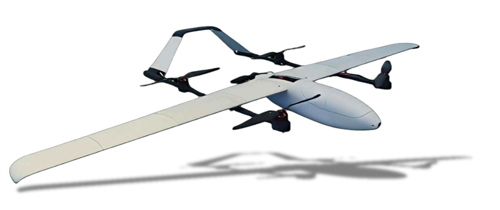

AeroBOT-Q1 垂直起降固定翼无人机教学科研平台
专为高校人工智能与无人机领域创新人才培养打造的高精度垂直起降固定翼飞行平台。

产品概述
AeroBOT-Q1 垂直起降固定翼无人机是专门为高校人工智能和无人机领域创新人才及相关专业学生的创新能力和技术实践能力而开发的高精度无人飞行平台。该无人机融合了多旋翼垂直起降的灵活性与固定翼高效巡航的性能，旨在满足复杂地形和中远程任务的需求，并作为验证先进飞行控制算法的理想工具。
平台搭载先进的 IMU、GPS、磁力计等多传感器系统，能够在室外环境中实现自主感知、自动巡航、目标识别与精确运动控制。配套丰富的功能软件包和开源代码，附有详尽的实验指导手册，从不同角度激发学生的学习热情，提高学习效率，成为人工智能、无人机等相关专业的理想实验平台。
核心功能
垂直起降与固定翼巡航：结合多旋翼无需跑道垂直起降的优势与固定翼长航时、高速度巡航的特点，适应多种复杂作业环境。
多传感器融合感知：集成高精度 IMU、GPS 和磁力计，实现室外环境下的实时位姿估计与环境适应，支持自主导航。
算法验证与二次开发：提供全开源硬件及软件接口，支持学生快速搭建原型样机，进行飞行控制算法、视觉识别算法的程序验证。
任务载荷搭载：具备较强的扩展性，可根据教学或科研需求搭载多种任务载荷，适用于无人驾驶航空器系统工程等多个领域的研究。
产品特点
垂起/固定翼平滑切换，两者优势互补，兼顾起降灵活性与巡航效率。
全开源硬件及软件架构，提供高稳定性与多飞行模式，支持终身升级支持。
具备实时位姿估计能力，能够适应复杂的室外飞行环境。
适用多研究方向，可广泛应用于无人机、机器人工程、人工智能等学科的教学与科研。
基本配置参数
教学价值
AeroBOT-Q1 可支撑无人机系统设计、飞行控制原理、空气动力学、传感器融合、计算机视觉及人工智能算法等课程内容。
学生可通过平台直观理解垂直起降与固定翼飞行的转换逻辑，掌握复杂系统的建模与仿真方法，并通过开源代码深入理解底层控制逻辑，提升工程实践能力。
适用场景
适用于高校及职业院校的无人驾驶航空器系统工程、飞行器控制与信息工程、机器人工程、人工智能等专业的实验教学。
也可用于无人机动力实验室建设、先进控制算法科研测试、长航时任务规划验证及复杂环境下的自主飞行研究。